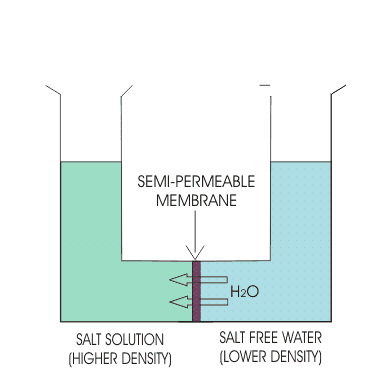
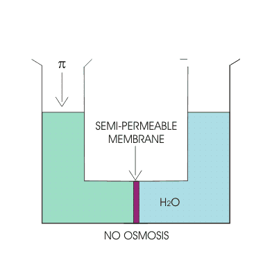
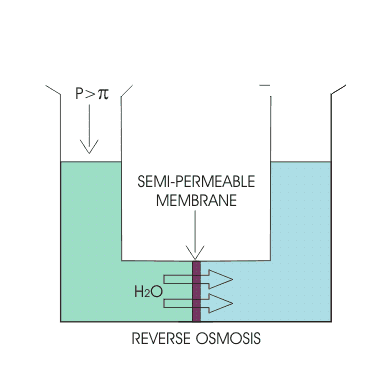
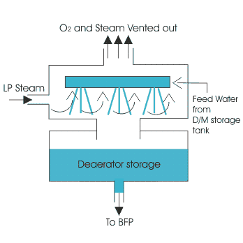

Demineralization Plant
Cation Exchange Resin
Anion Exchange Resin
Mixed Bed Resins
Degasser
Reverse Osmosis Plant (RO Plant)
Reverse Osmosis
Reverse Osmosis Plant
Deaerator
All natural sources of water contain impurities as well as dissolved gasses. The amount of these impurities depends on type of water source and location.
Why it is necessary to treat the raw water?
Raw water coming from different sources contains dissolved salts and un-dissolved or suspended impurities. It is necessary to remove harmful salts dissolved into the water before feeding it to the boiler.
Because-
(1) The deposition of dissolved salts and suspended impurities will form a scale on the inside wall of different heat-exchangers and thus there will create excessive pressure and thermal stress (due to uneven heat exchange across the wall of heat-exchanger) inside the heat-exchangers, which may lead to the explosion and serious hazards for boilers.
(2) The harmful dissolved salts may react with various parts of boiler through which it flows, thereby corrode the surfaces.
(3) Corrosion damage may occur to turbine blades.
Hence, boiler feed water treatment is very much required to remove such dissolved and suspended impurities from water before feeding it to boiler.
Arrangements for Boiler Feed Water Treatment
For continuous supply of feed water to boiler, after removing impurities, there are two types of plant generally incorporated. These are:
(1) Demineralization plant (D M plant)
(2) Reverse Osmosis plant (R O plant)
Demineralization plant employs a chemical method to separate out the dissolved salt in raw water. But reverse osmosis plant employs a simple physical method to separate the dissolved salts. Before feeding the raw water to these plants sand filtration is done by different filters.
Along with these plants there are two deaerators, which remove dissolved oxygen in the feed water, as traces of oxygen may react with boiler tubes and thereby corrode those.
Complete arrangements and inside equipment of these plants are described below.
Boiler Feed Water Treatment Process
Demineralization Plant
The function of demineralization plant is to remove dissolved salt by ion exchange method (chemical method) and there by producing pure feed water for boiler.
Demineralization Plant
The salts which make the water hard are generally-chloride, carbonates, bi-carbonates, silicates & phosphates of sodium, potassium, iron, calcium and magnesium.
In D M plant there are three types of resin used for boiler feed water treatment process -
(1) Cation exchange resin
(2) Anion exchange resin
(3) Mixed Bed resin
- Resins are chemical substances (usually polymers of high molecular weight) used to react with salts & eliminates them by chemical process.
- As the name suggests, the cation exchange resin, exchanges the cation & anion exchange resin, exchanges anions with the salts dissolved in hard-water.
Cation Exchange Resin
NaCl + RSO3H = RSO3 - Na + + HCl
Thus H2SO4, H2CO3 are also produced.
We have removed Na + but the water has become acidic.
Anion Exchange Resin
HCl + R4NOH = R4NCl + H2O
This way we have eliminated Cl - and thus acidity of the water.
Similar reaction for H2SO4 also.
Mixed Bed Resins
These mixed bed resins are used in Demineralization plant of boiler feed water treatment, to remove the ions (especially Na + and SO3 2- ) which may further present in the water after foregoing process of purification.
Degasser
The function of degasser tower is to remove carbonate ions by forming carbon-di-oxide. In degasser tower stream of water is poured from top & air is blown from bottom to top. In the pressure of air the carbonic acid (H2CO3) present in the water dissociates into H2O and CO2.
H2CO3 = H2O + CO2
This CO2 is free to mix with air.
Benefits of using degasser are:
(1) It removes the carbonic acid and other gases mixed with water by simple physical method & thereby reduce the chances of corrosion.
(2) It saves the resins which are very costly chemicals and thereby improves the economy of boiler feed water treatment process.
The H2CO3 free water is now collected in degasser sump and then pumped to anion exchange resin inlet.
Reverse Osmosis Plant (RO Plant)
Like demineralization plant there is another stage of water treatment which is known as reverse osmosis plant. RO plant uses the process known as reverse osmosis to produce salt-free water. The theoretical aspect is described below:-
|  |  |
Osmosis is a process in which only the solvent molecules pass through a semi-permeable membrane from higher solvent density to lower solvent density (i.e. from solution of lower density to the solution of higher density).
Osmotic pressure:- It is the minimum pressure that should be applied on the higher density solution so that no osmosis takes place through the semi-permeable membrane is called the osmotic pressure (π).
π = iCRT
Where,
C is concentration of solution,
R is universal gas constant,
T is temperature in Kelvin scale,
i is van’t Hoff’s factor, different for different solutions. i = 1 for infinitely dilute solution. Hence osmotic Pressure is a function of temperature.

Reverse Osmosis
On the higher density solution (lower density solvent) if a pressure (P), greater than osmotic pressure (π) is applied then the solvent molecules pass through the semi-permeable membrane from higher density solution to lower density solution. This phenomenon is called reverse osmosis. This one important stage for boiler feed water treatment process.
Reverse Osmosis Plant
In RO plant using reverse osmosis phenomenon salt-free water is taken out from raw water after the sand filtration. Purity of the salt-free water depends on effectiveness of the permeable membrane.
The layout of a typical Reverse Osmosis Plant is given below
Reverse Osmosis Plant Layout
Steam air pre-heater require some steam which will reduce the efficiency of the power plant.
The procedure is described below:
(1) Sodium hypochlorite(NaOCl) is injected to raw water to kill the algae or bacteria present in the raw water. Otherwise they may cause harm to the multi grade-filter (MGF).
(2) The multi-grade filter is the primitive type of filter where sand, stone-chips, stones are used in stacks to remove the large size suspended particles from the raw water.
(3) The net filter again removes medium-size suspended particles, where the raw water passes through the net minute vents.
(4) Then by ultra-filtration very small suspended particles are removed. After long usage of ultra-filtration unit, it requires back-wash, and then it is back-washed with water & three chemicals, viz. HCL, NaOH & NaOCl (Sodium Hypochlorite). HCl Removes iron by dissolving it. It also removes the basic salts those are rejected on UFU.
NaOH ← It helps to remove acidic salt.
NaOCl ← To kill algae and bacteria inside the UFU.
(5) After ultra-filtration the water is stored into RO feed tank & then pumped with RO feed pump of Reverse Osmosis Plant. In the channel the water is mixed with HCL (for pH controlling, as the water coming from RO plant or RO permeate water should have pH around 6.0) and SMBS (sodium meta bi-sulphate) [Na2S2O5]. Due to the presence of sodium hypochlorite the water is chlorinated. To remove excess chlorine SMBS is used. If excess chlorine is not removed then the semi-permeable membrane may get damaged. It is also mixed with anti-scaling reagent (AS), which reacts with those chemicals which form scale inside the channel.
(6) Then the water is passed through micro-cartridge filter (MCF) which removes the other suspended particles & the precipitate formed by the reaction of anti-scaling reagent with the scaling chemicals.
(7) In the this stage of boiler feed water treatment the water is fed to RO unit by H/P pump, where after successive filtration by 1st & 2nd stage RO it is fed to degasser unit.
(8) After degasification the water is passed through D/M plant MB (mixed bed) resin & stored into D/M water storage tank.
Deaerator

Deaerator is a contact type open heater in which dissolved oxygen in the feed water is removed as much as possible by mechanical means. Gases move from higher partial pressure to lower partial pressure. Partial pressure of oxygen in air is high (as air contains almost 21% oxygen by volume) than the partial pressure of dissolved oxygen in feed water. Hence, by simple mechanical means it is not possible to eliminate the dissolved oxygen from water.
Hence, in deaerator the feed water is heated by LP or VB steam (pressure: 2.5 – 3.5kg/cm2, temperature: 1400°C). Due to heating the partial pressure of dissolved oxygen in feed water increases and solubility decreases to considerable amount. Then by mechanical means dissolved oxygen is released in air. Hence Deaerator is another very important part of boiler feed water treatment plant.
The mechanical means is same as that of in degasser. But instead of air, LP steam is blown from bottom to top and feed water is poured from top to bottom.
Deaerator also serves as header, to provide a net positive suction head (NPSH) to the boiler feed pumps (BFP) and here by protects the BFPs from any damage due to vapor lock and cavitations.
 by
by